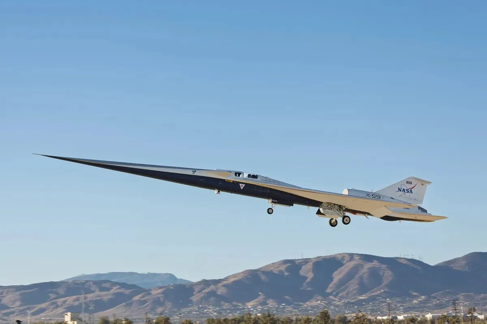

The X-59 tests whether supersonic flight can be quiet
Originally posted on LinkedIn, November 28, 2025.
It looks like a design mistake, but this aircraft could change supersonic flight. With an extremely long nose, an engine mounted on its back, and no front window at all, the X-59 is a new experiment from NASA and Lockheed Martin. It made its first flight only days before I wrote this.
The goal is to fly faster than the speed of sound without the noise that follows. No sonic boom shaking cities and alarming regulators. NASA calls it QueSST, short for Quiet SuperSonic Technology.
There has already been an attempt to operate a commercial aircraft like this: Concorde. It failed operationally because of high maintenance costs, polluting engines, and unbearable noise. Since then, no supersonic passenger aircraft has flown over land. Noise, cost, and regulation killed the dream.
The X-59 will test whether we can build technology that gives us time back without polluting, deafening people, or adding more needless noise to the planet. The tests are only beginning, and there is still a long way to go. But an aircraft that looks like it arrived from tomorrow makes old limits feel less final.
